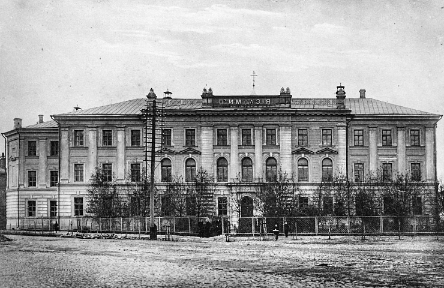
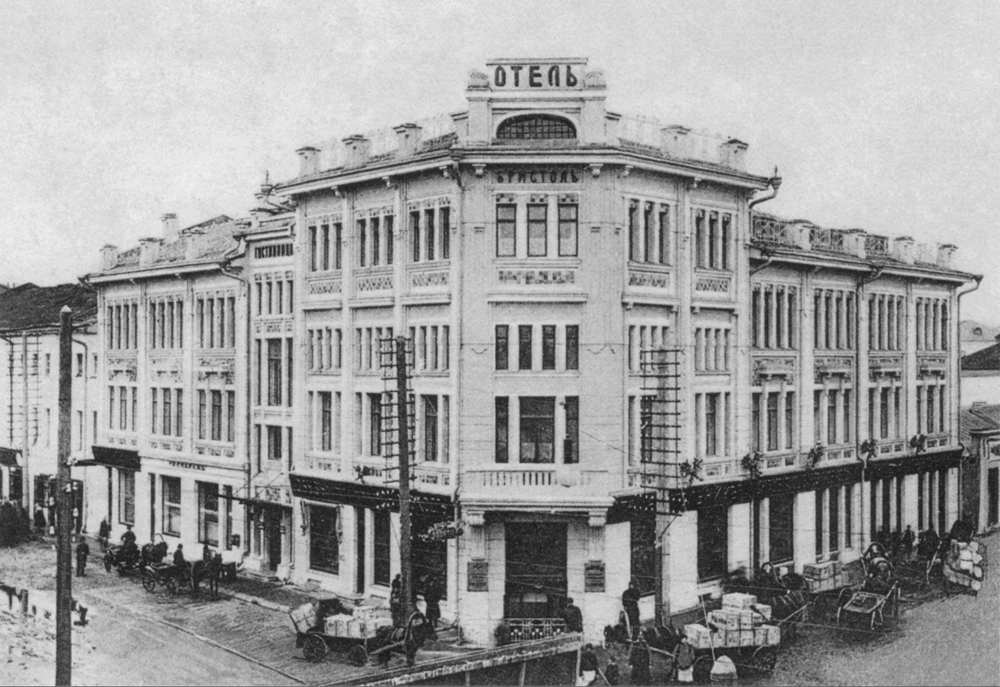
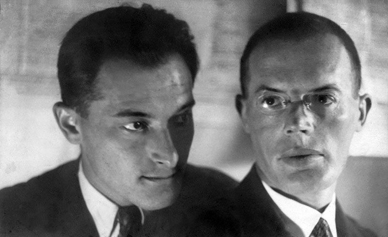
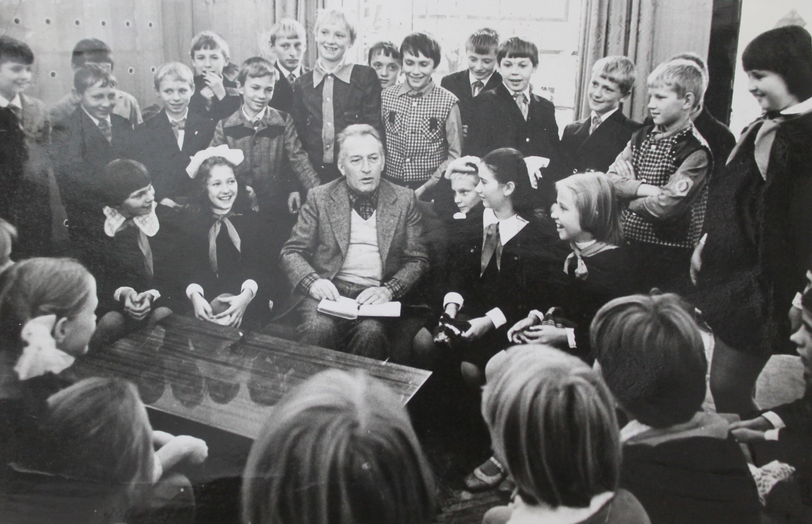
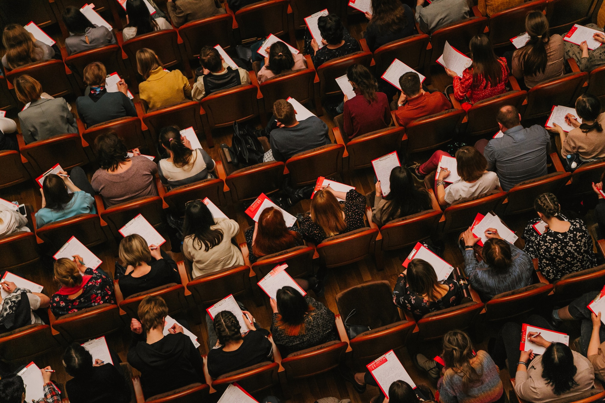

Тест к маршруту «XX и XXI век в Ярославле» В настоящее время в здании на Советской улице располагается ЯрГУ им. П. Г. Демидова, но в начале XX века его занимала Ярославская мужская классическая гимназия, в которой учился этот русский поэт.  М. А. Богданович Верно. Перед зданием университета даже установлен памятник поэту. М. А. Кузмин Неверно. Михаил Алексеевич родился в Ярославле, но вскоре вместе с семьей переехал в Санкт-Петербург, где поступил в 8-ю гимназию. На изображении бывшая гостиница «Бристоль». Связана ли она с литературной жизнью города?  Верно Да, это так. В одном из номеров гостиницы жил и работал над последними главами романа «Разгром» А.А. Фадеев, здесь же останавливался В.В. Маяковский. Нет, не связана На самом деле в этой гостинице останавливался Владимир Маяковский, а Александр Фадеев работал здесь над романом «Разгром». В фельетоне «Халатное отношение к желудку» сатирики Ильф и Петров колоритно описывают одно из заведений ярославского общепита: «Столы накрыты липкой нечистой клеенкой. Ножи и вилки прикованы цепями к ножке стола (чтоб не украли)». О каком заведении идет речь?  «Культурная чайная №5» Верно. Авторы изобразили именно эту кооперативную столовую. «Сад кустаря» Нет, в этом здании обедали их герои из романа «Золотой теленок» - Остап Бендер и Шура Балаганов. Итальянский писатель Джанни Родари был частым гостем в СССР. В время посещения Ярославля он встретился с детьми из спортивной секции в одном образовательном учреждении. Каком?  Дворец пионеров Все верно. Сохранился даже рисунок, нарисованный Родари во Дворце. Дворец Труда Неверно: вопрос с подвохом! Дворец Труда и Дворец пионеров находились в одном здании на ул. Советской 17, однако в разное время. В 2022 году Ярославль стал столицей «Тотального диктанта». Автором текста для него стала популярная писательница, посетившая город. О ком идет речь?  Гузель Яхина Нет, автор популярного романа «Зулейха открывает глаза» никогда не была в Ярославле. Марина Степнова Марина Степнова прочитала текст диктанта на главной площадке в Волковском театре и провела творческую встречу в Некрасовской библиотеке. Вернуться к маршрутам Вернуться к тестам